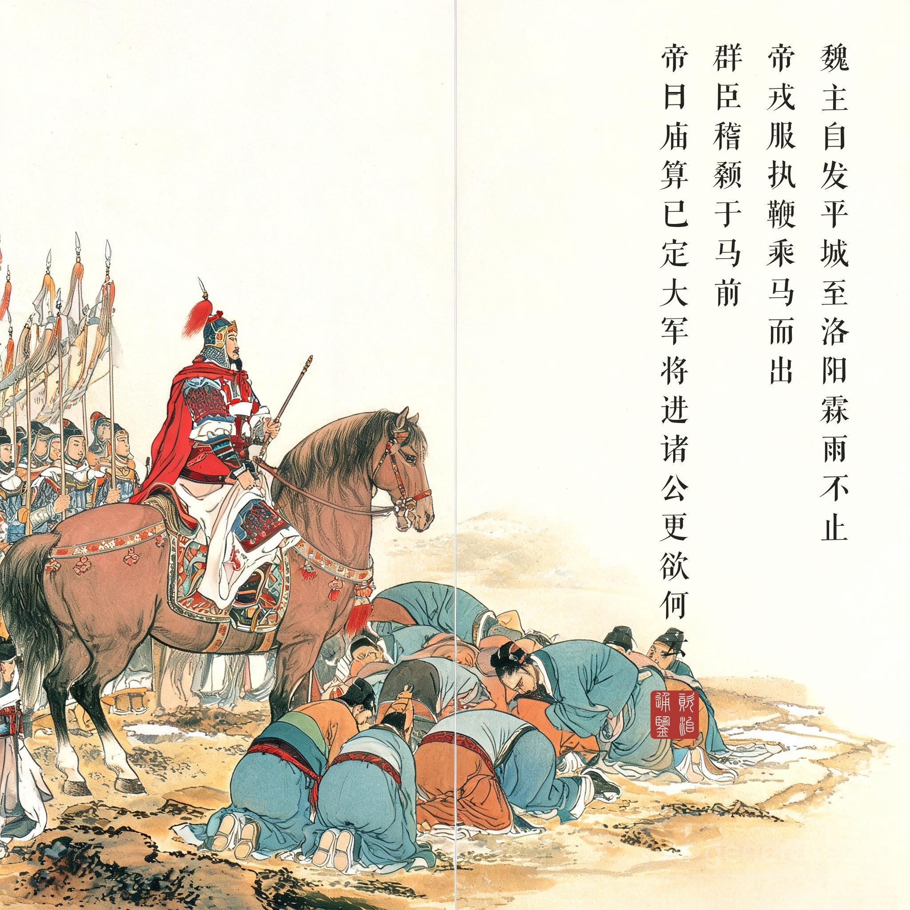
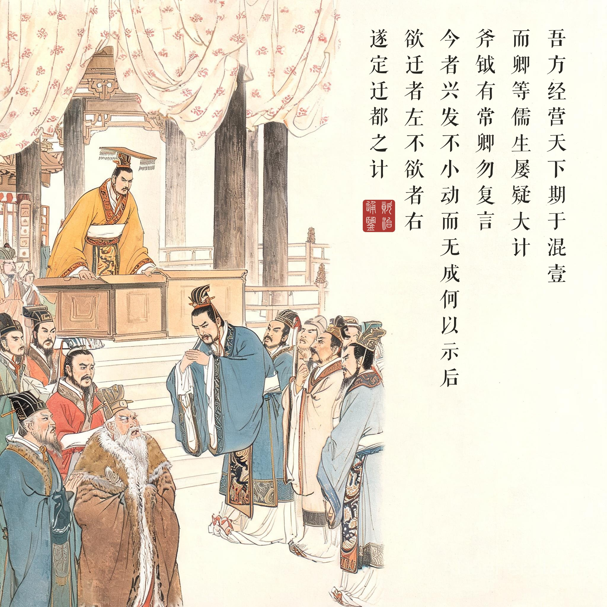
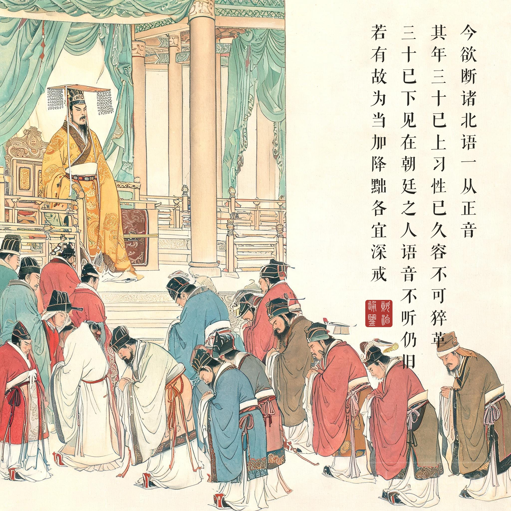
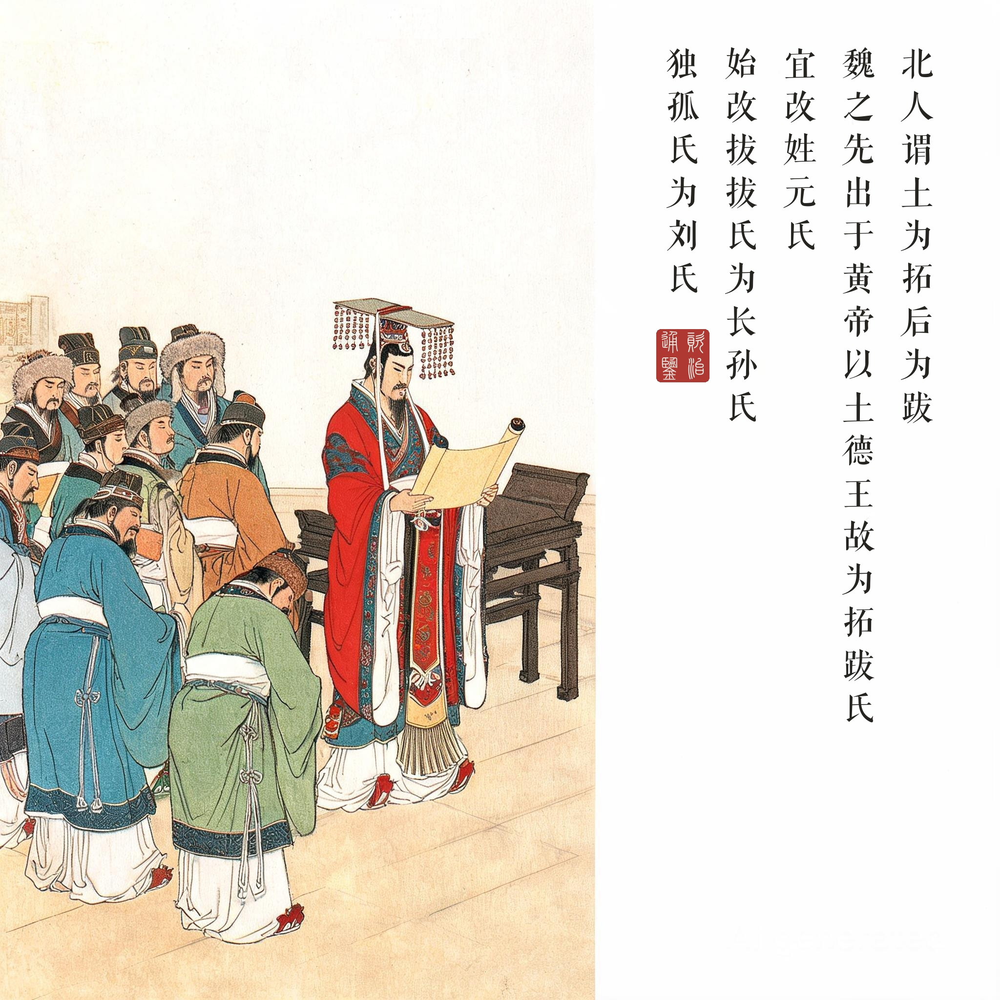

《资治通鉴 · 卷第一百三十八至一百四十 · 齐纪四至六》世祖武皇帝下永明十一年至高宗明皇帝中建武三年（公元 493-496 年）
（据 daizhigev20《资治通鉴》底本节录）
魏主自发平城至洛阳，霖雨不止。……帝戎服，执鞭乘马而出。群臣稽颡于马前。帝曰：“庙算已定，大军将进，诸公更欲何云？”尚书李冲等曰：“今者之举，天下所不愿，唯陛下欲之。臣不知陛下独行，竟何之也！臣等有其意而无其辞，敢以死请！”帝大怒曰：“吾方经营天下，期于混壹，而卿等儒生，屡疑大计；斧钺有常，卿勿复言！”策马将出，于是安定王休等并殷勤泣谏。帝乃谕群臣曰：“今者兴发不小，动而无成，何以示后！朕世居幽朔，欲南迁中土；苟不南伐，当迁都于此，王公以为何如？欲迁者左，不欲者右。”安定王休等相帅如右。南安王桢进曰：“‘成大功者不谋于众。’今陛下苟辍南伐之谋，迁都洛邑，此臣等之愿，苍生之幸也。”群臣皆呼万岁。时旧人虽不愿内徙，而惮于南伐，无敢言者；遂定迁都之计。
（卷一百三十九）魏主下诏，以为：“北人谓土为拓，后为跋。魏之先出于黄帝，以土德王，故为拓跋氏。夫土者，黄口之色，万物之元也；宜改姓元氏。诸功臣旧族自代来者，姓或重复，皆改之。”于是始改拔拔氏为长孙氏，达奚氏为奚氏，乙旃氏为叔孙氏，丘穆陵氏为穆氏，步六孤氏为陆氏，贺赖氏为贺氏，独孤氏为刘氏，贺楼氏为楼氏，勿忸于氏为于氏，尉迟氏为尉氏；其馀所改，不可胜纪。
（卷一百三十九）帝曰：“夫‘名不正，言不顺，则礼乐不可兴。’今欲断诸北语，一从正音。其年三十已上，习性已久，容不可猝革。三十已下，见在朝廷之人，语音不听仍旧；若有故为，当加降黜。各宜深戒！”
魏主（孝文帝）从平城出发到洛阳，秋雨连绵不停。……皇帝穿着戎服，执鞭乘马而出。群臣跪伏在马前叩头。皇帝说：“庙算已定，大军将进，诸位还想说什么？”尚书李冲等说：“这次的举动，天下人都不愿意，只有陛下要干。臣不知道陛下独自前行，究竟要去哪里！臣等有劝阻之心却无借口，冒死请求！”皇帝大怒说：“我正经营天下，志在统一，你们这些儒生屡次怀疑大计；斧钺自有常刑，你不要再说了！”扬鞭策马就要出阵，这时安定王休等一同殷勤流泪劝谏。皇帝这才告诉群臣：“这次兴师不小，劳而无功，拿什么给后人看！朕世代居于北方，想南迁到中原；如果不再南伐，就迁都到这里，王公们以为如何？愿意迁都的站左边，不愿意的站右边。”安定王休等相率站到了右边。南安王桢进言说：“‘成大功者不谋于众。’陛下如果搁置南伐之谋，迁都洛阳，这是臣等的愿望，百姓的幸运。”群臣都呼万岁。当时旧人虽然不愿内迁，但更怕南伐，没人敢说话；于是定下迁都之计。
（改姓诏）魏主下诏，认为：“北方人管‘土’叫‘拓’，‘后’叫‘跋’。魏的先祖出自黄帝，以土德称王，所以是拓跋氏。土，是黄色的本色、万物之元；应该改姓元氏。各功臣旧族从代地来的，姓氏有重复的，都改掉。”于是改拔拔氏为长孙氏，达奚氏为奚氏，乙旃氏为叔孙氏，丘穆陵氏为穆氏，步六孤氏为陆氏，贺赖氏为贺氏，独孤氏为刘氏，贺楼氏为楼氏，勿忸于氏为于氏，尉迟氏为尉氏；其余所改的，数不胜数。
（断北语）皇帝说：“‘名不正，言不顺，则礼乐不可兴。’如今要禁绝北方语言，一律遵用中原正音。三十岁以上的，习性已久，容许不马上改。三十岁以下、现在朝廷任职的，语音不许再照旧；有故意违犯的，加以降职罢黜。各自深以为戒！”
一场表演式的军事行动。迁都洛阳的每一步都是算好的：三十万大军压境、秋雨困师、群臣泣谏、皇帝震怒——然后抛出“不南伐就迁都”的二选一。这不是妥协，是勒索：把最坏选项（南伐）做成刀架在脖子上，让反对者自己“选”出你要的答案。读画人看第一幕要注意人物的位置语言：皇帝在马上、群臣在泥里——权力的高差就是选项的落差。史家论孝文帝改革多谈其汉化意义，而《通鉴》叙事的重心先在这场政治操作的精密度。
改到语言，才是改到根。衣冠、姓氏、都城都是外壳，语言是思维的载体。“断诸北语”的分龄设计（三十上下宽严两档）显示出这次改革的工程头脑：不是一刀切的道德动员，而是给不可逆的代际切换留出梯度。同卷还有通婚姻（鼓励鲜卑贵族与汉人士族通婚）、改度量、立礼乐——一场持续数十年的文明嫁接，洛阳从此重新成为华夏文明的中心，而代价是六镇鲜卑的疏离（二十多年后六镇之乱埋葬了北魏，汉化与内亚治理的张力是隋唐历史的真正起点）。
“元”的自我发明。改姓诏的修辞值得细读：先承认“拓跋”的鲜卑语义（土之后），再用五行学说把“土”翻译成华夏宇宙观（黄中之色、万物之元）——同一个词，从部族记忆改写成王朝神话。政治合法性从来不是继承来的，是发明出来的；孝文帝比大多数汉人皇帝更懂这一套。本回四幕的画家眼：戎服执鞭（武）→南迁定计（谋）→断诸北语（文）→改姓元氏（礼）——一个胡人皇帝按华夏圣王的次序，重走了文明的加冕礼。